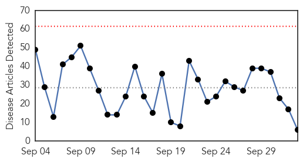
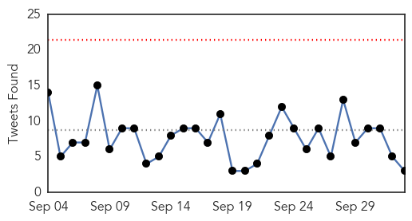

30 Day Trends
Web: 0 alerts, 0 warnings
Twitter: 0 alerts, 0 warnings
Top Articles:
Top Tweets:
- 0.775
- Sprinter loses family to Ebola facing deportation back to Sierra Leone - USA TODAY http://t.co/5hLaTGOQzi ebola EVD
- 0.564
- Panhandle Science Cafe topic: Ebola care - Washington Times http://t.co/2HDwBdovq8 ebola EVD
- 0.542
- Sierra Leone: Frontline Nurses In Aftermath of Ebola Outbreak Battle ... - Huffington Post http://t.co/R46i5LJ4Pe
Web/News Articles
Tweets
Article Locations